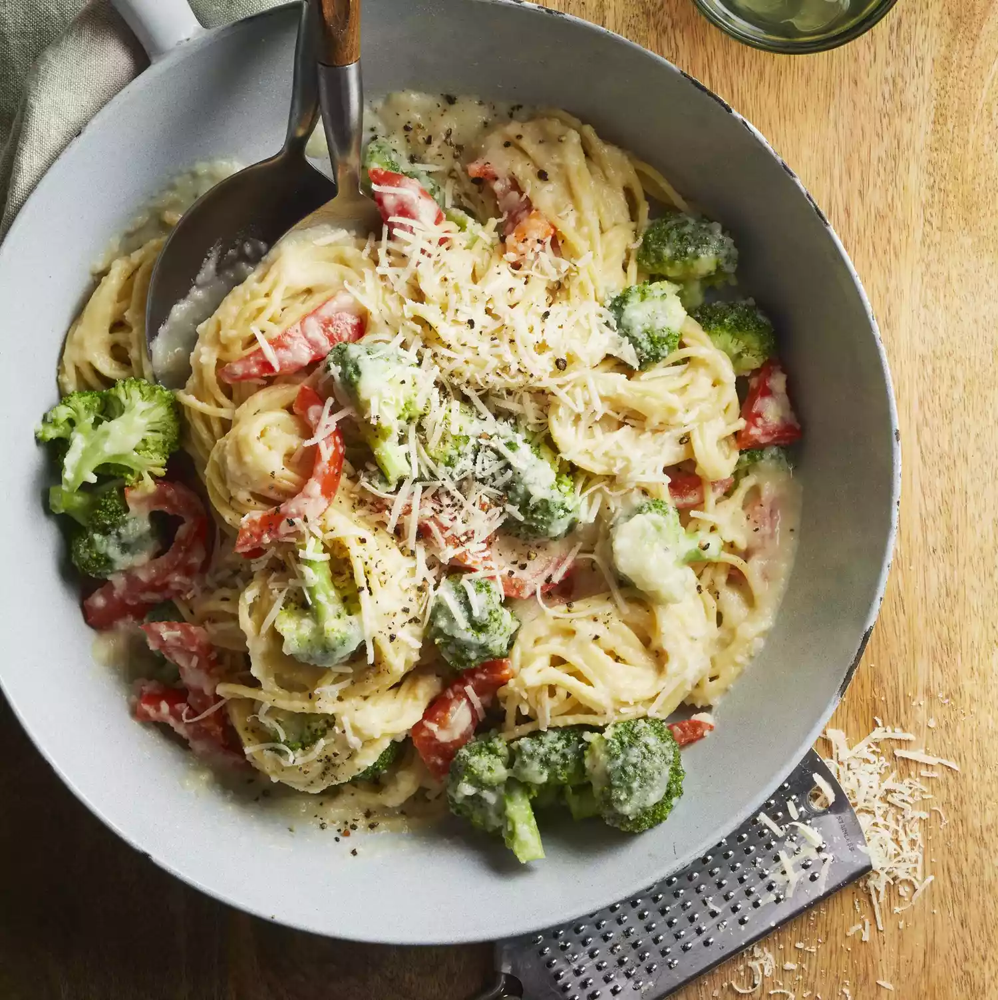

Description
If you're not using a high-protein pasta, you can double the protein per serving by adding 8 ounces cooked and sliced chicken breast. Double the sauce in Step 1 to keep the dish creamy.
Ingredients
- 1 tablespoon olive oil
- ½ cup chopped onion
- 2 cloves garlic, minced
- 3 cups cauliflower florets
- ¾ cup vegetable broth
- ½ cup finely shredded Parmesan cheese, plus more for garnish
- ⅓ cup water
- ⅛ teaspoon black pepper
- 6 ounces multigrain spaghetti, uncooked
- 4 cups broccoli florets, cut into 1-inch pieces
- 1 red bell pepper, cut into bite-size strips
- 2 tablespoons sliced fresh basil
- 1 teaspoon lemon zest (Optional)
- 1 tablespoon lemon juice
Directions
- Heat oil in a small saucepan over medium heat. Add onion and garlic; cook, stirring occasionally, until onion is tender, 3 to 4 minutes. Stir in cauliflower and broth; bring to a boil. Reduce heat and simmer, covered, until tender, about 15 minutes. Uncover and let cool slightly. Transfer to a food processor. Add cheese, water, and black pepper. Cover and pulse until smooth.
- Meanwhile, cook pasta according to package directions, adding broccoli and bell pepper the last 5 minutes. Drain, reserving 1/2 cup cooking water.
- Return pasta mixture to pot and stir in cauliflower sauce. Heat through, stirring in reserved cooking water (if needed) to reach desired consistency. Garnish with basil, zest (if using), lemon juice, and additional cheese.